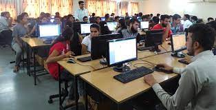

JG COLLEGE OF COMPUTER APPLICATION
Imagine theory, add practical training, state-of-the-art labs, and innovative spaces and you will unleash creative and entrepreneurial skills. The program offered by JG College of Computer Application is designed to prepare you for a wide variety of employment opportunities within the vigorous, powerful, and ever-growing field of computers. Graduates of this program are ignited to develop and test computer programs to ensure secure implementation of integrated solutions along with up-to-date skills and mastery to succeed in a broad range of employment settings, in diverse sectors, and in both large and small organizations. Our faculty are accomplished professionals, highly accessible, teach a vast range of topics, and have developed strong research methods that provide many opportunities to our students. In all we do, we are driven to delve within, push further, and ask bigger questions—and to leverage our knowledge to enrich society and people. No matter your ultimate career goal, joining JG College of Computer Application is the first leap toward mastering success. We provide the tools necessary to achieve a tomorrow-proof future, professionally and personally. We know you are eager. The future belongs to those who claim it first.
